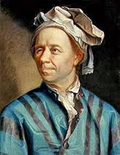

"He calculated just as men breathe, as eagles sustain themselves in the air."
- Francois Arago, discussing Leonhard Euler
Leonhard Euler was born in Basel, Switzerland on April 15, 1707. He was educated in Basel and studied philosophy in preparation to become a minister like his father. However, throughout his early life he came in contact with mathematics and was found to be very skilled. He was a Christian for his whole life, but he didn't have the enthusiasm for theology that he did for math. He and his mathematics mentor of sorts, Johann Bernoulli, persuaded his father to let him study math.
During his math education and for the rest of his career, Euler produced a steady stream of discoveries and papers. He published 886 papers and won the Paris Academy Prize 12 times. After finishing his education, Euler spent most of his career in St. Petersburg and Berlin. He was married twice and had 13 children, but only five of them lived to adulthood. His concentration and memory were incredible and allowed him to make so many contributions to mathematics and mechanics. His ability to calculate extremely complex problems in his head meant that he was not negatively affected when he went blind later in his life. In fact, most of his published work dates from after his loss of eye-sight. Euler died on September 18, 1783 in St. Petersburg, but the St. Petersburg Academy had enough of a backlog of his papers that they continued to publish his work for more than 30 years after his death.